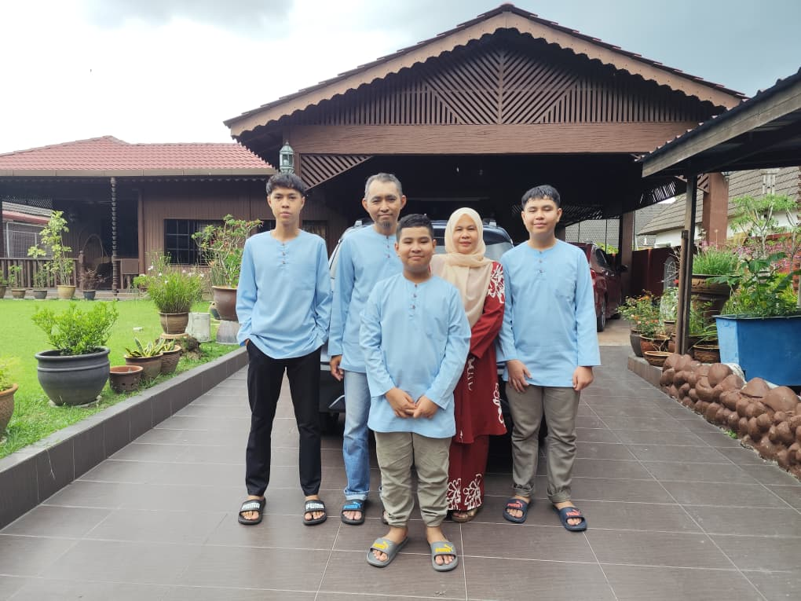

My Family
The foundation of support and motivation behind my studies.
Family Portrait

The Pillars of My Life
👨
Father
- Name:
- Azahari Bin Hashim
- Age:
- 48 years old
- Occupation:
- Perodua Manufacturing
👩
Mother
- Name:
- Siti Asmizal Binti Hashim
- Age:
- 45 years old
- Occupation:
- PULAPOL Bukit Sentosa
👦
Younger Brother (No. 2)
- Name:
- Aidil Hayyqal Bin Azahari
- Age:
- 16 years old
- Birth Order:
- Second Child (After me)
👶
Youngest Brother
- Name:
- Aidil Zaffriel Bin Azahari
- Age:
- 12 years old
- Birth Order:
- Third Child (The youngest)